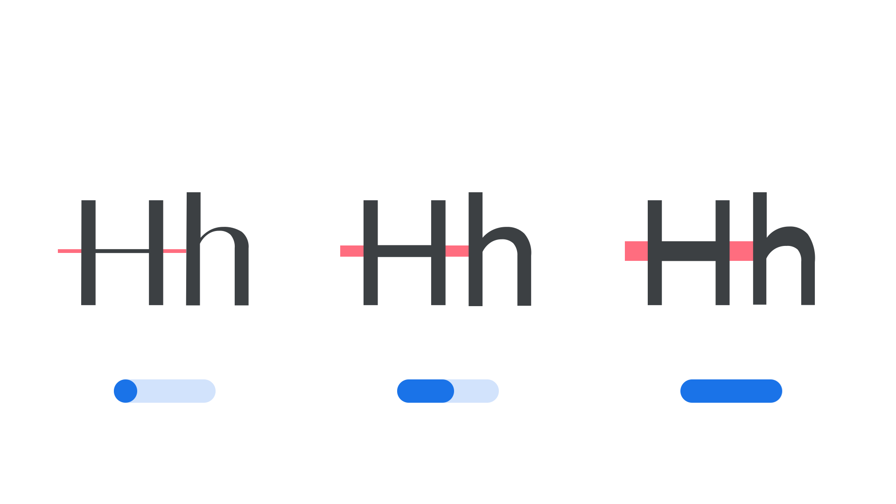

Parametric axis
By Google Fonts Knowledge contributors · Google Fonts Knowledge.
Original article · Source on GitHub · CC BY-SA 4.0. Text, illustrations and existing credits reproduced from the licensed Knowledge repository. Open Shelf adapted the layout and links; these adaptations are also CC BY-SA 4.0. No endorsement implied.
A parametric axis in a variable font is one that adjusts only one singular aspect of a typeface as a “parameter.” These axes are high-precision tools intended only for expert use, as they offer a bridge between the worlds of type designer and typographer, affording expert users some of the powers of fine-tuning typefaces that were previously reserved for type foundries.

They are useful by themselves to tune a single aspect of weight, width or height, but are often be modified in concert with other axes or settings in order to obtain a desirable impact on our typography. Knowing what the desirable changes are, and which sets of adjustments to make, requires experience and expertise.
Yet these kinds of enhancements can be packaged into “smart” functionality that optimizes typography for designers and users who do not need to understand the internal mechanics. For example, the Parametric Counter Width axis (XTRA) can be used alongside adjustments to word spacing and letter spacing to improve justification, as demonstrated in Type Network’s variable fonts brochure.
Explore more in our article, “Introducing parametric axes.”